As part of CSE 274 (Image-based Rendering) at UC San Diego, I implemented the Light Field Rendering algorithm described by Levoy and Hanrahan in their seminal paper. In this report, I'll go over the basic theory, the implementation process, and some of my results.
In their 1996 paper, Levoy and Hanrahan noted that the plenoptic function (initially 7D) could be reduced to 4D in free space and fixed time, making it possible to sample it. They described multiple parameterizations of lines in 4D, with the "best" being that of a two-plane (light slab) parameterization; that is, lines in space are parameterized by their intersection points with two planes (the uv plane and st plane). Capturing a set of images from a grid of positions on one plane, looking at the other, would allow novel views to be reconstructed from arbitrary camera positions and directions (though the camera would have to be near the uv plane for best results). This could be extended to multiple light slabs for 360 degree views of a scene. Levoy and Hanrahan implemented this algorithm by storing a compressed version of vectors corresponding to pixels in the input images. In my implementation, I did not use compression and simply sampled pixels from the original images as needed.
The goal of my implementation was produce high-quality novel views in a variety of scenes, both rendered and real. I also wanted to support multiple light slabs. My implementation process was iterative, and ran as follows:
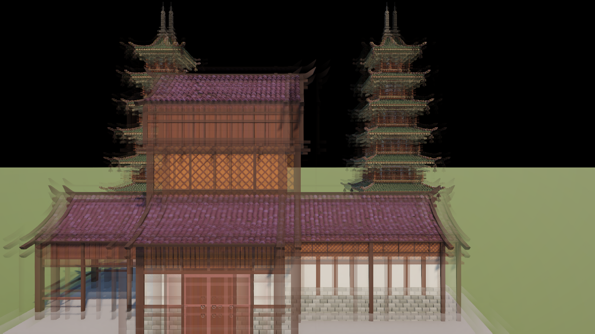
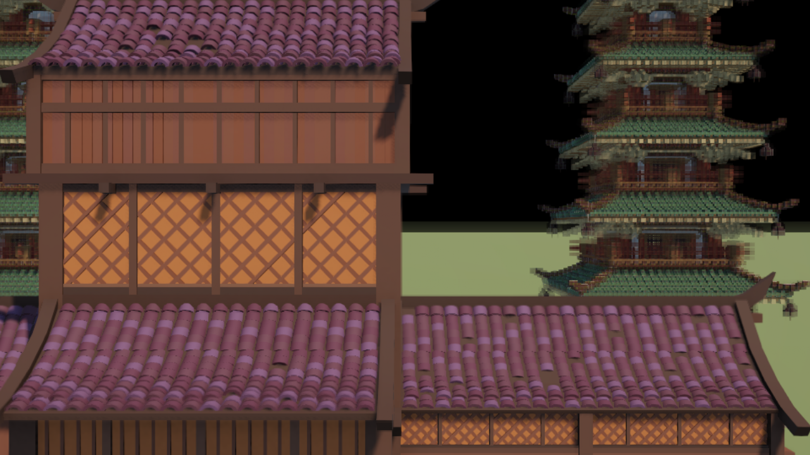
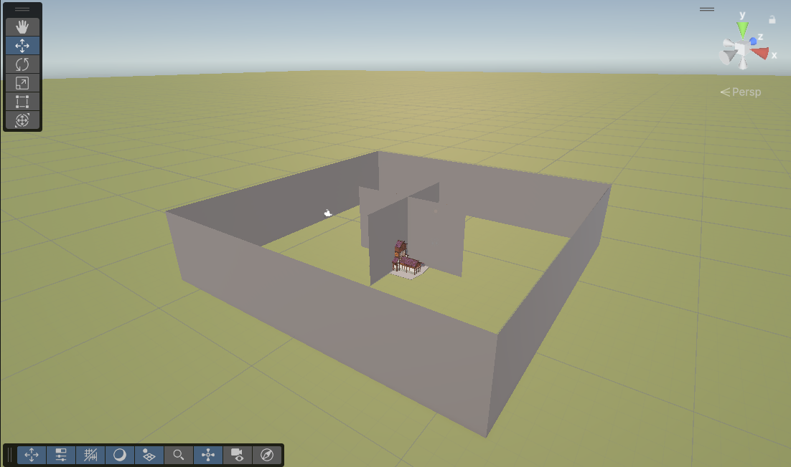
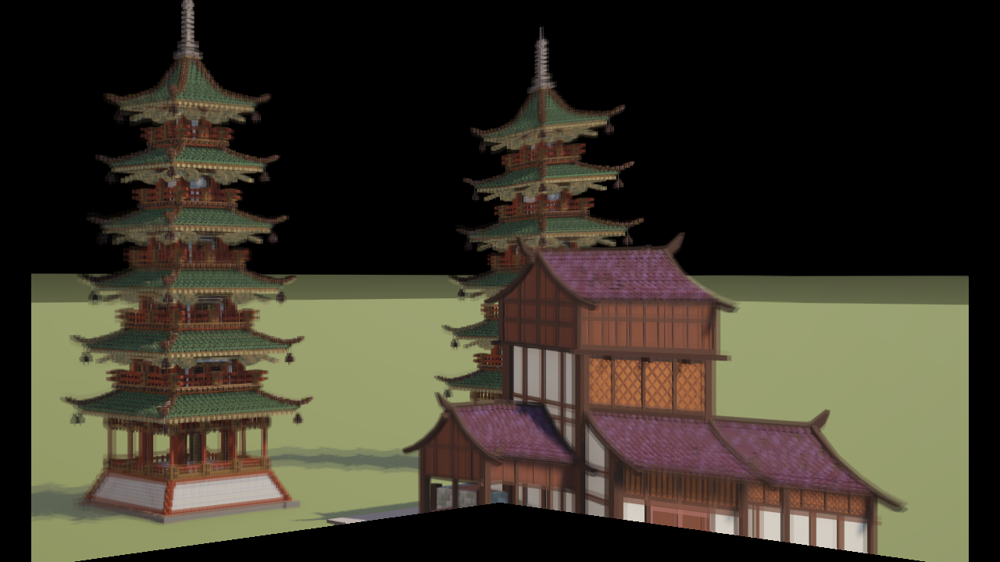
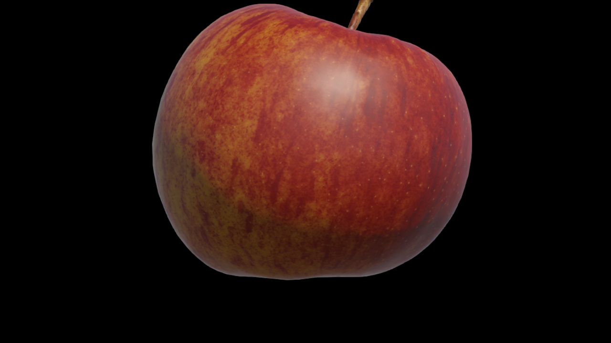
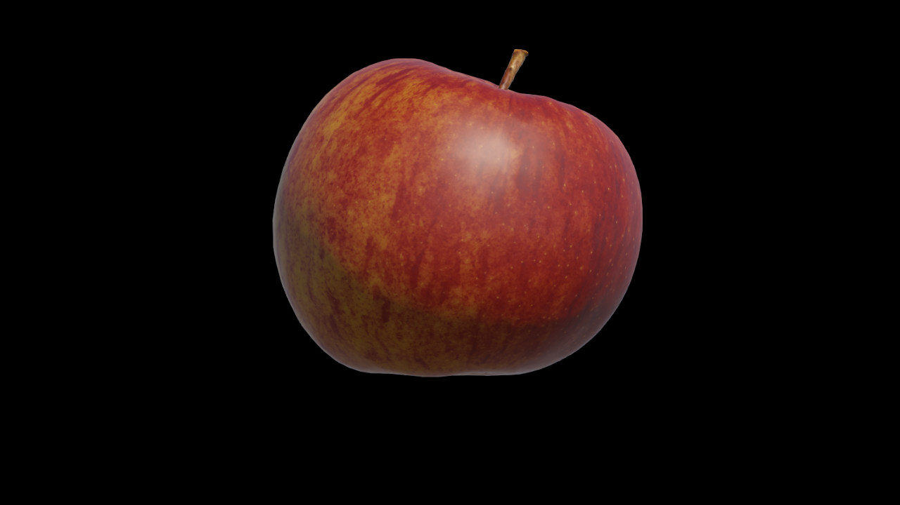
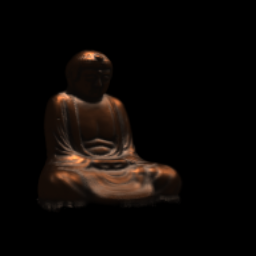
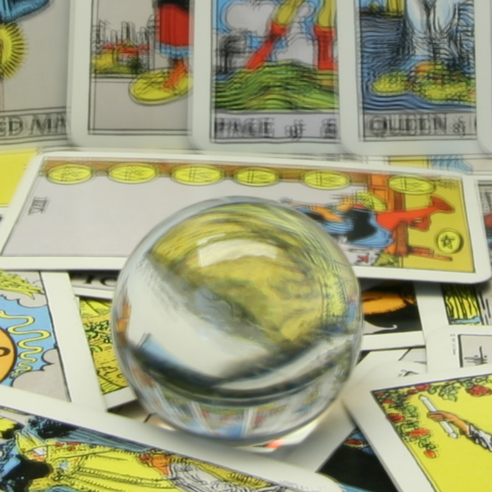
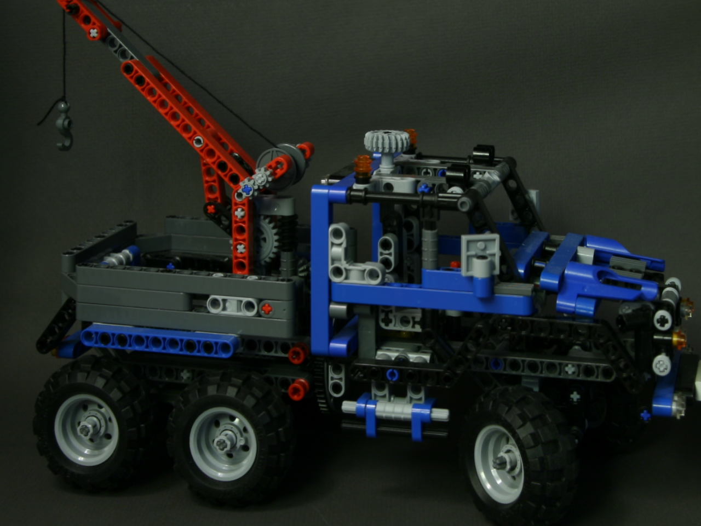
Captions (top to bottom, left to right):
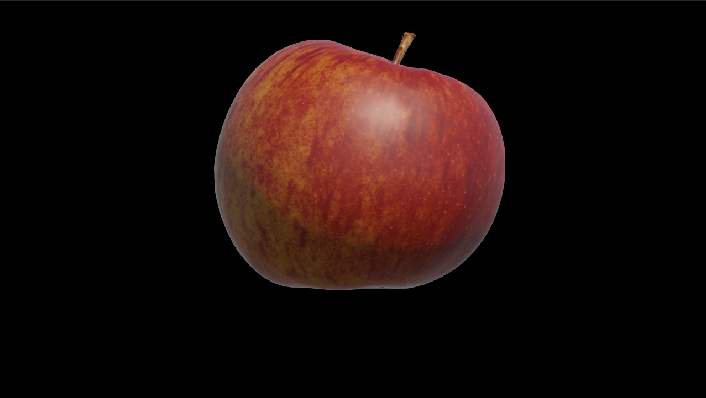
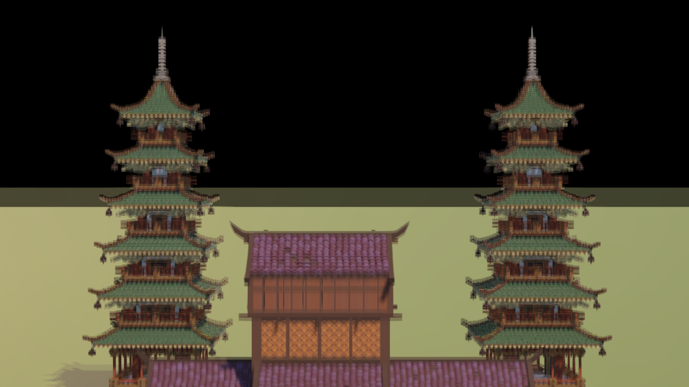
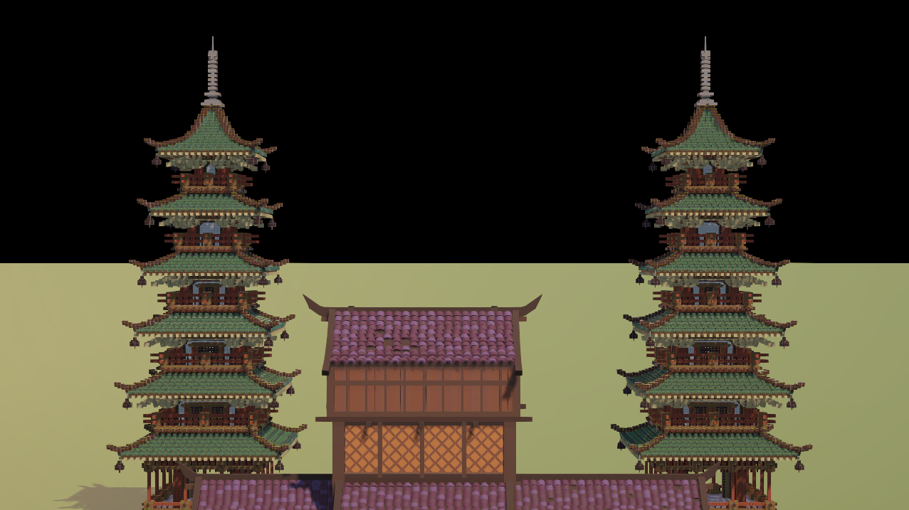
The latter scene has significantly wider spacing of source images on the UV plane, and the scene has more depth, making the render blurrier.